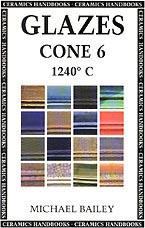

| Glazes Cone 6
by Michael Bailey
Having recently reviewed another book on cone 6 glazes on this
site, it is interesting to have the opportunity to have a look at
another publication - albeit quite a different one - on the topic
- Glazes Cone 6, by British potter and Bath Potters Supplies
partner Michael Bailey.
This publication appears as part of the well known "Ceramics
Handbook" series, which covers various topics on ceramics ranging
from paperclay to decals to kiln building and more. This series
is published in the US by the University of Pennsylvania Press,
Philadelphia.
Bailey's
book on cone 6 glazes concentrates on this temperature range in
oxidation. This has the advantage that anyone with a kiln - gas
or electric - can benefit from the knowledge and glazes that this
book has to offer. It has the disadvantage of omitting the interesting
field of cone 6 reduction glazes. Perhaps a small chapter on this
topic could have been included, possibly with some information on
artificial reduction glazes with silicon carbide, to the benefit
of those with electric kilns.
However the book does deliver handsomely on many other fronts.
Included are a number of useful base glazes: transparent, matt,
alkaline, crystalline, chun, luster and others. To top it off, there
is a chapter on raw glazes. All in all, there are about 40 'base
glazes' for which recipes are given. Add to this variations with
coloring oxides - mainly iron, cobalt, nickel, manganese and titanium,
and we arrive at a huge database of cone 6 glazes.
Backing up this research is a sound theoretical framework, which
should help the reader to better understand the scientific and technical
issues concerning glazes in general and cone 6 in particular. Covered
are: the effects of clay bodies on glazes, the unity formula and
percentage analysis, alumina-silica ratios etc. A chapter on Glaze
Fit explains coefficients of expansion as well as common glaze defects
such as crazing, shivering and dunting and gives advice on alleviating
these problems.
An interesting last chapter is the "Gallery", where Bailey
offers images and explanations of cone 6 works of about a dozen
fellow potters. This is followed by some addresses where we can
find helpful info on glazes and related issues on the internet.
Topping off this publication is an appendix, which includes 'Analysis
of Materials', a glossary, a list of suppliers and a bibliography
for those wanting to do further research.
Conclusion:
There are compelling arguments for wanting to work in the cone 6
range - stoneware effects can be achieved at a lower, cost-cutting,
more environmentally friendly temperature. Wear and tear on kilns
is reduced, as are firing times. Glazes Cone 6 adds valuable
information to the repository of general knowledge on glazes for
this temperature range, while at the same time offering us a gamut
of glazes to try out and experiment with. My greatest criticism
is that little is said about the important issue of glaze stability
and possible leaching of glaze components in functional wares used
with food. Readers concerned with this are referred to the book
Mastering Cone 6 Glazes, which makes
a good companion book to Bailey's Glazes Cone 6.
More Reviews
|